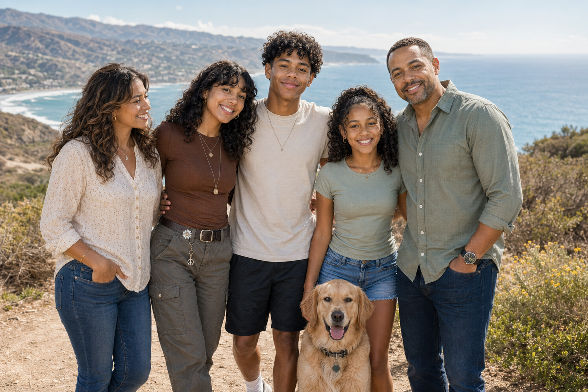
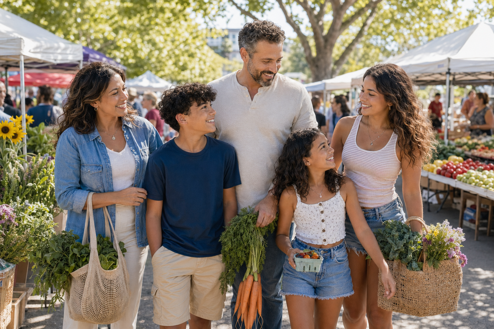
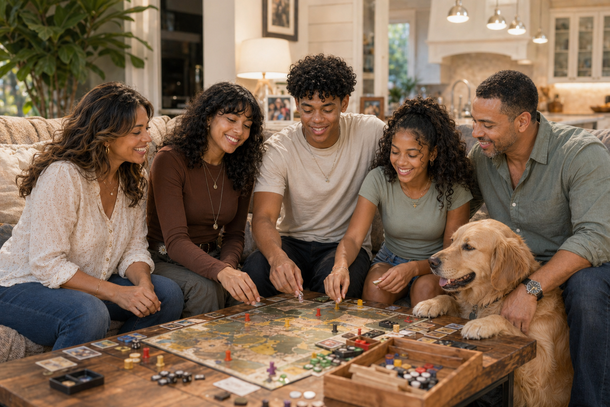
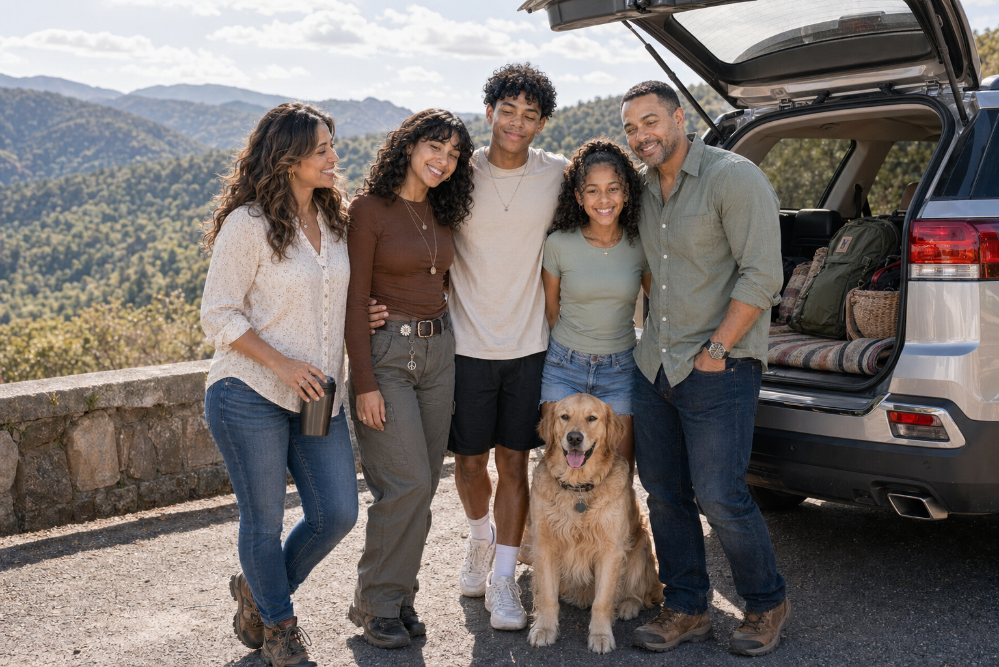

Trail Days
The family likes weekend hikes and day trips with their dog, Sol.
The Mercers are a close, energetic family from Charlotte who bring warmth, curiosity, encouragement, and joy wherever they go. Whether they are showing up for one another at school events, exploring new places, giving back in their community, or simply making time to laugh together at home, they reflect the kind of family life built on love, support, adventure, and shared purpose.

The family likes weekend hikes and day trips with their dog, Sol.

They enjoy trying a mix of favorite dishes together and turning dinner into family time.

They love festivals, school events, and neighborhood gatherings.

Pediatric nurse practitioner
Sofia has a gift for making people feel seen and cared for. Her work as a pediatric nurse practitioner fits naturally with the way she moves through life at home too. She keeps the family grounded, remembers the details that matter, and has a way of turning ordinary evenings into meaningful time together.


Civil engineer
Daniel is the steady hand behind many of the family’s best memories. As a civil engineer, he loves solving problems and thinking ahead, and that same mindset shows up in the way he plans trips, coaches youth soccer, and makes sure everyone feels included when something new is being tried.


College student in digital media
Leila brings imagination and perspective to the family. She is away at college studying digital media, lives on campus, and works part-time filming events. She has become known for noticing the moments other people miss, which is why she is usually the one turning family trips and celebrations into memories everyone gets to keep.


High school junior
Mateo is the kind of person who likes to test himself. He balances varsity soccer, robotics, and school leadership, and he thrives in places where teamwork and problem-solving matter. He brings a lot of momentum to the family, whether that means pushing himself on the field or being the first one ready to head out for the next adventure.


Middle school student
Nadia brings lightness and spark to the whole family. She loves dance, science projects, climbing, and almost anything that lets her move, explore, or create. She is especially proud of her recent science fair success, and she has a way of making even the busiest family day feel more fun.

Their last big trip was an eight-day vacation to Costa Rica, and it became one of those trips the family still talks about often. They split their time between adventure and slowing down together: zip-lining through the trees, hiking to waterfalls, kayaking, and visiting a wildlife rescue center before ending the days with long dinners and stories about everyone’s favorite part.

Outer Banks sunset stop

Saturday morning at the farmers market

Rainy-night board game showdown

Blue Ridge Parkway photo break